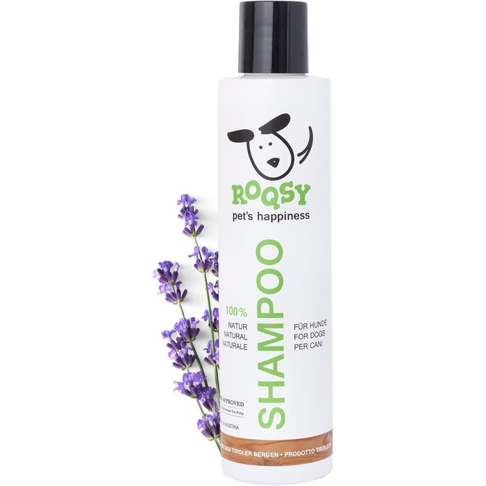

ROQSY Natur-Hundeshampoo
mild, für empfindliche Haut
- Mild und natürlich – ganz ohne Hautjucken
- Wäscht auch hartnäckigen Schlammloch-Duft zuverlässig raus
- Sanfte Formel, die Fell und Haut nicht austrocknet
Affiliate-Link – für dich kostet's nichts extra, uns hilft's dem Rudel weiter. Anzeige